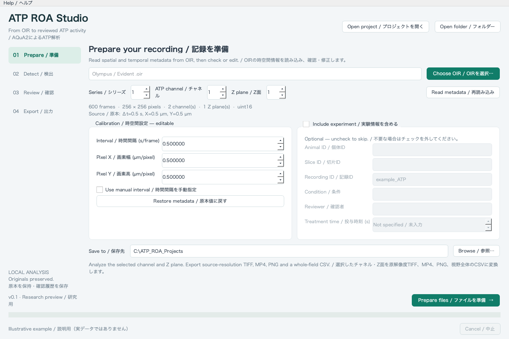

ATP ROA Studio 操作マニュアル / User manual
日本語・英語併記 · バージョン 0.1.0 · 研究用プレビュー
Japanese–English · Version 0.1.0 · Research preview
- ATP ROA Studio 操作マニュアル / User manual
- 1. はじめに / Before you begin
- 2. ダウンロードと起動 / Download and launch
- 3. 最短手順 / Quick start
- 4. Prepare：ファイルと時空間設定 / File and calibration
- 5. Detect：AQuA2による検出 / Detection with AQuA2
- 6. Review：ROAを確認・選別する / Review and select ROAs
- 7. Export：採用ROAの結果を保存する / Export selected results
- 8. 定量値の読み方 / Interpreting measurements
- 9. 保存と再開 / Saving and resuming
- 10. よくある問題 / Troubleshooting
- 11. エンジンと再現性 / Engine and reproducibility
1. はじめに / Before you begin
ATP ROA Studioは、OIR動画からAQuA2で活動イベントを検出し、人が確認したROAだけを定量・出力するアプリです。ROAは時空間的な活動イベントを表し、1つの細胞や1匹の動物と同じ単位ではありません。
ATP ROA Studio detects activity events in OIR movies with AQuA2, lets you review individual ROAs, and exports measurements for the ROAs you keep. An ROA is a spatiotemporal activity event; it is not necessarily one cell or one animal.
処理の流れは 準備 → 検出 → 確認 → 出力 です。原本OIRを上書きせず、新しいプロジェクトフォルダーに保存します。解析中にインターネットへのデータ送信は行いません。
The workflow is Prepare → Detect → Review → Export. Outputs go into a new project folder; the original OIR is not overwritten. Analysis does not upload recordings to the internet.
2. ダウンロードと起動 / Download and launch
- GitHubの Releases から
ATP-ROA-Studio-Windows-x64.zipをダウンロードします。
DownloadATP-ROA-Studio-Windows-x64.zipfrom Releases on GitHub. - ZIPを右クリックし、すべて展開を選びます。例：
C:\ATPStudio。
Right-click the ZIP and choose Extract All, for example intoC:\ATPStudio. - 展開したフォルダー内のGLIAロゴ付き
ATP ROA Studio.exeをダブルクリックします。
Double-clickATP ROA Studio.exewith the GLIA logo inside the extracted folder. - 実行ファイルだけを移動せず、
python、runtime、assetsなどの同梱フォルダーを一緒に保持します。
Keep accompanying folders such aspython,runtimeandassetstogether with the executable.
MATLAB・Fiji・Python・Javaの別途インストールは不要です。通常の利用でコマンド入力は必要ありません。GitHubの自動生成「Source code」ZIPは開発者用で、実行環境を含みません。
No separate MATLAB, Fiji, Python or Java installation is required. Normal use needs no commands. GitHub’s automatically generated “Source code” ZIP is for developers and does not include the runtime.
対象は Windows 10/11 x64 です。Windows ARM64は検証対象に含みません。512×512画素・720フレーム程度では32 GB RAMを目安にし、検出時のメモリ上限は使用可能なRAMより低くします。現時点ではWindows実機での起動・全工程検証が未実施です。検証状況を確認してください。
The target is Windows 10/11 x64. Windows ARM64 is outside the tested scope. For recordings near 512×512 pixels and 720 frames, 32 GB RAM is a practical starting point; set the detection memory limit below available RAM. Native Windows startup and end-to-end verification are still pending. See Validation status.
3. 最短手順 / Quick start
| 手順 / Step | 操作 / Action |
|---|---|
| 01 Prepare / 準備 | Choose OIRで原本を選び、時間間隔と画素サイズを確認します。 / Choose an OIR and check the interval and pixel sizes. |
| Experiment / 実験情報 | 不要ならInclude experimentのチェックを外します。 / Uncheck Include experiment if you do not want these details. |
| Prepare files / ファイルを準備 | 保存先を決め、TIFF・MP4・PNG・CSVを作成します。 / Choose an output folder and create TIFF, MP4, PNG and CSV files. |
| 02 Detect / 検出 | 設定を確認し、Run AQuA2を押します。 / Check settings and select Run AQuA2. |
| 03 Review / 確認 | 各ROAの位置と波形を見て、Keep・Exclude・Holdを選択します。 / Inspect each ROA’s location and trace; choose Keep, Exclude or Hold. |
| 04 Export / 出力 | Export selectionで採用ROAの結果を保存します。 / Select Export selection to save the kept ROAs. |
4. Prepare：ファイルと時空間設定 / File and calibration

上の画面例は説明用で、実験データを含みません。 / The example above is illustrative and contains no experimental data.
OIRを選ぶ / Choose the OIR
Choose OIRで撮影したOIRを選択します。分割されたOIRでは、マスターファイルと連番の補助ファイルを同じフォルダーに置き、マスターを選んでください。ファイルを選ぶと、フレーム数、画像サイズ、チャネル数、Z面数と校正値を読み込みます。
Use Choose OIR to select the acquired OIR. For split recordings, keep the master and numbered companion files together and select the master. The app reads frame count, image dimensions, channels, Z planes and calibration.
Series・Channel・Z planeの意味 / What these selections mean
| 項目 / Field | 意味と選び方 / Meaning and selection |
|---|---|
| Series / シリーズ | 1つのOIR内の独立した画像セットです。フレーム番号ではありません。1つしかない場合は1のままにします。 / An independent image set inside an OIR, not a frame number. Leave it at 1 when there is only one. |
| ATP channel / チャネル | 分析する蛍光信号です。ATPセンサーが撮影されたチャネルを選びます。チャネル1が常にATPとは限りません。 / The fluorescence signal to analyze. Select the channel used for the ATP sensor; channel 1 is not always ATP. |
| Z plane / Z面 | 深さ方向の1枚の撮影面です。1面撮影なら1を選択します。このアプリは複数Z面をまとめた3D解析を行いません。 / One imaging plane along depth. Select 1 for a single-plane recording. This app does not combine Z planes into a 3D analysis. |
例えば、720フレームの単一ATPチャネル・単一Z面動画が1セットなら、通常はSeries 1 / Channel 1 / Z plane 1です。複数チャネルでは撮影設定と照合してください。Series・Channel・Z planeを変更したら、Read metadata / 再読み込みを押します。
For example, one 720-frame movie with a single ATP channel and one Z plane normally uses Series 1 / Channel 1 / Z plane 1. For multiple channels, check the acquisition settings. After changing any of these selections, press Read metadata.
Calibration / 時空間設定
| 項目 / Field | 単位 / Unit | 確認内容 / What to check |
|---|---|---|
| Interval / 時間間隔 | s/frame | 1フレーム取得にかかる秒数。1 Hzなら1秒、2 Hzなら0.5秒です。 / Seconds between frames: 1 Hz means 1 s; 2 Hz means 0.5 s. |
| Pixel X / 画素幅 | µm/pixel | 横方向の1画素の長さです。 / Physical width of one pixel. |
| Pixel Y / 画素高 | µm/pixel | 縦方向の1画素の長さです。 / Physical height of one pixel. |
OIRに値があれば自動入力します。欠損値は0で表示され、正しい正の値を入力するまで先に進めません。撮影装置の記録と照合してください。時間間隔を編集するとUse manual intervalが有効になり、指定した等間隔の時間軸を使います。元の値に戻すにはRestore metadataを押します。
Values are filled automatically when available in the OIR. Missing values appear as 0; enter correct positive values before continuing. Check them against acquisition records. Editing the interval enables Use manual interval and applies a fixed time step. Use Restore metadata to restore the source values.
画素サイズは面積、時間間隔は持続時間・AUC・時間関連の値に影響します。単位を確認し、校正値を変更した解析は新しいプロジェクトとして準備してください。
Pixel sizes affect area; the frame interval affects durations, AUC and timing measurements. Check units carefully and prepare a new project when changing calibration for analysis.
Experiment情報は任意 / Experiment details are optional
Include experiment / 実験情報を含めるにチェックを入れると、Animal ID、Slice ID、Recording ID、Condition、Reviewer、Treatment timeを記入できます。必要な項目だけ記入し、不明な情報を推測で埋めないでください。
When Include experiment is checked, you can enter Animal ID, Slice ID, Recording ID, Condition, Reviewer and Treatment time. Fill only what you know; do not guess missing information.
不要な場合はチェックを外してください。入力欄が無効になり、その状態で新しく準備したプロジェクトと結果表にはこれらの情報を含めません。Treatment timeは記録開始からの秒数で、不明ならNot specifiedのままにします。解析元のファイル名・校正値・設定は追跡のため保存されます。
Uncheck it to skip these details. The fields become disabled, and a newly prepared project and its output tables omit them. Treatment time is seconds from recording start; leave it Not specified if unknown. Source filename, calibration and analysis settings are still retained for traceability.
保存先と変換 / Output location and conversion
Save toで保存先を選び、Prepare filesを押します。毎回別のプロジェクトフォルダーを作成します。保存先には原本に加えてTIFF・動画・解析中の一時データを保存できる空き容量を確保してください。
Choose Save to, then press Prepare files. A new project folder is created each time. Allow enough disk space for TIFF, movies and temporary analysis data in addition to the original recording.
| 主な出力 / Main output | 内容 / Content |
|---|---|
raw/movie.ome.tif |
選択チャネル・Z面の原画素値と適用した校正情報 / Source pixel values for the selected channel and Z plane, with applied calibration |
raw/preview.mp4 |
原動画の表示用プレビュー / Display preview of the movie |
raw/mean_projection.png, max_projection.png |
平均・最大値投影 / Mean and maximum projections |
raw/fov_trace.csv, fov_trace.png |
視野全体の平均蛍光時系列 / Whole-field mean fluorescence trace |
project.json |
原本情報・校正値・設定・ファイル識別情報 / Source metadata, calibration, settings and file identifiers |
MP4は15 fpsの表示用動画です。再生時間は実際の撮影時間と異なる場合があります。画像内に表示される取得時刻を使い、MP4から蛍光強度を定量しないでください。
MP4 playback is 15 fps. Playback duration may differ from acquisition duration. Use the acquisition timestamps shown in the movie; do not measure fluorescence intensity from MP4 pixels.
5. Detect：AQuA2による検出 / Detection with AQuA2
準備完了後、02 Detectへ進みます。下表の初期値は開始点であり、ATP用に妥当性を確認した固定閾値ではありません。代表記録を用いて設定を確認し、群間比較では解析条件を揃えてください。
After preparation, open 02 Detect. The defaults below are starting points, not validated fixed thresholds for ATP. Check representative recordings and use harmonized settings for comparisons.
| 設定 / Setting | 初期値 / Default | 意味 / Meaning |
|---|---|---|
| Activity threshold / 活動閾値 | 3.0 noise SD | ノイズに対する活動検出の閾値 / Activity threshold relative to estimated noise |
| Minimum area / 最小面積 | 20 pixels | 小さい候補領域を除く基準 / Minimum candidate area |
| Minimum duration / 最小持続 | 5 frames | 短い候補活動を除く基準 / Minimum candidate duration |
| Temporal threshold / 時間分割閾値 | 3.5 | AQuA2の時間分割に用いる閾値 / Threshold used for temporal segmentation |
| Baseline smoothing / 基準線平滑化 | 25 frames | 基準線推定の平滑化窓 / Smoothing window for baseline estimation |
| Baseline segment / 基準線区間 | 200 frames | 基準線推定の区間長 / Segment length for baseline estimation |
| Edge crop / 周辺除外 | 5 pixels | 画像の各辺から除外する幅 / Margin removed from each image edge |
| Median radius / メディアン半径 | 1 pixel | 半径1は3×3、0は無効 / Radius 1 means 3×3; 0 disables filtering |
| Memory limit / メモリ上限 | 12 GB | AQuA2に割り当てるJavaヒープ上限。アプリ全体の使用量上限ではありません。 / Java heap limit for AQuA2, not a cap on total application memory |
Run AQuA2を押すと、基準線・ノイズ推定、活動領域検出、時間分割、空間分割、特徴量抽出を行います。処理時間は記録と設定に依存します。キャンセル後は中止処理が終わるまで待ってください。解析をやり直すと新しいrunが作られ、以前の結果と確認履歴を保持します。
Run AQuA2 performs baseline/noise estimation, active-region detection, temporal segmentation, spatial segmentation and feature extraction. Runtime depends on the recording and settings. After cancelling, wait for cancellation to finish. Each new run retains earlier results and reviews.
この版は、等間隔の2D+t動画と正方画素に対応します。動き補正・明示的退色補正・追加の全域イベント検出・CFU・手描きマスク・3D分割は未実装です。基準線推定は退色補正と同じ処理ではありません。
This version supports uniformly sampled 2D+t movies and square pixels. Motion correction, explicit photobleaching correction, additional global-event detection, CFU, manually drawn masks and 3D segmentation are not implemented. Baseline estimation is not the same as photobleaching correction.
既存MATの読み込み / Importing existing MAT results
Import AQuA2 .matから既存のMATLAB v7.3形式のAQuA2結果を読み込めます。MATLABの起動は不要です。元動画に対応する結果チャネル1または2を指定してください。寸法・校正値とサンプルフレームを照合するため、別記録の結果や照合できない位置補正済み結果は拒否します。以前のfavoriteは★として残り、新しい確認状態はPendingです。
Use Import AQuA2 .mat for existing MATLAB v7.3 AQuA2 results without running MATLAB. Select the matching result channel, 1 or 2. The app checks dimensions, calibration and sample frames, rejecting mismatched recordings or registered results whose mapping cannot be verified. Prior favorites appear as ★ and begin with Pending review status.
6. Review：ROAを確認・選別する / Review and select ROAs
一覧または画像上のROAをクリックし、位置・広がり・動画・ΔF/F波形を確認します。緑はイベント全体の空間領域、黄色はそのフレームで活動している画素です。Zoomで選択イベントを拡大し、Fitで全視野に戻ります。スライダー・時刻・波形上のカーソルは同じフレームに対応します。
Click an ROA in the table or image and inspect its location, extent, movie and ΔF/F trace. Teal shows the full spatial footprint; gold marks pixels active in the current frame. Use Zoom for the selected event and Fit for the whole field. The slider, timestamp and trace cursor correspond to the same frame.
Rawは原画像、Median previewは表示用のノイズ低減画像です。表示の切り替えは保存済みの検出設定・結果を変更しません。
Raw displays source images; Median preview reduces noise for viewing. Changing the display does not modify saved detection settings or results.
| 操作 / Action | キー / Key | 結果 / Result |
|---|---|---|
| Keep / 採用 | A | 採用ROAの結果に含める / Include in selected results |
| Exclude / 除外 | R | 採用結果から除外し、イベントと確認履歴は保持 / Exclude from selected results while retaining the event and review history |
| Hold / 保留 | H | 判断を保留。採用結果には含めない / Defer the decision; omit from selected results |
| Reset / 未確認へ | — | Pendingに戻す / Return to Pending |
| Save note / メモ保存 | — | 採否を変えずにメモを保存 / Save a note without changing the decision |
ショートカットはReview画面で、文字入力欄に入力していない時に使えます。採否の理由をメモに残すと再確認しやすくなります。操作ごとに時刻・メモ・確認状態を保存し、実験情報が有効なら確認者も記録します。★は過去のfavoriteの印で、今回のKeepを自動指定するものではありません。
Shortcuts work on the Review screen when you are not typing in a text field. Notes help explain decisions during later review. Each action saves time, note and review status, plus reviewer when experiment details are enabled. A ★ identifies a prior favorite; it does not automatically mark an event Keep.
フィルターで未確認・採用・除外・保留などを絞り込めます。Previous runで過去の解析を開けます。同じ位置で繰り返すROAも別の活動イベントとして扱います。
Filter the list by Pending, Keep, Exclude or Hold. Use Previous run to reopen an earlier analysis. Repeated ROAs at the same location remain separate activity events.
7. Export：採用ROAの結果を保存する / Export selected results
04 Exportで採用数・保留数・未確認数を確認し、必要ならInclude selected-ROA overlay MP4を選んでExport selectionを押します。毎回新しい出力フォルダーを作り、RESULTS.htmlを開きます。KeepにしたROAだけが採用結果に含まれます。
In 04 Export, check the counts of kept, held and pending events. Optionally select Include selected-ROA overlay MP4, then press Export selection. Every export creates a new folder and opens RESULTS.html. Only Keep events enter the selected results.
| ファイル / File | 内容 / Content |
|---|---|
selected_events.csv |
採用ROAの定量値 / Measurements for kept ROAs |
review_all_events.csv |
全ROAの定量値と確認状態 / Measurements and review states for every ROA |
selected_traces.csv |
採用ROAの全時間ΔF/Fと活動フレーム情報 / Full ΔF/F traces and active-frame flags for kept ROAs |
recording_summary.csv |
記録単位の件数、確認完了状態、採用発生頻度 / Recording-level counts, review completion and accepted onset rate |
ROA_XXXX.png, selected_traces.png |
個別・重ね合わせ波形 / Individual and combined traces |
selected_ROA_overlay.png, .mp4 |
採用ROAの位置と動画 / Map and optional movie of kept ROAs |
selected_ROA_masks.tif |
1ページにつき1イベントの空間マスク / One spatial mask per event per page |
mask_page_index.csv |
TIFFページとイベントIDの対応 / TIFF-page to event-ID mapping |
selected_events.h5 |
原画像座標の時空間マスクと波形 / Spatiotemporal masks in source-image coordinates and traces |
manifest.json |
原本・設定・選択・出力ファイル識別情報 / Source, settings, selections and output-file identifiers |
0イベント・0採用でも、ヘッダー付きCSVと記録要約を保存できます。採用がない場合、採用ROAの波形画像・マスクTIFF・MP4は作成しません。確認途中の出力も可能ですが、review_completeがFalseの場合は保留または未確認が残っています。
Zero detections or zero selected events still produce CSV headers and a recording summary. With no selected events, selected trace plots, mask TIFF and overlay MP4 are not created. Partial review can be exported; review_complete=False means held or pending events remain.
CSVはExcelで開きやすいUTF-8 BOM形式で、列名は英語です。測定できない値は0に置換せず空欄にし、qc_flagsに理由を残します。
CSVs use UTF-8 with a BOM for Excel compatibility and English column names. Unavailable values remain blank, rather than being replaced by zero; reasons appear in qc_flags.
8. 定量値の読み方 / Interpreting measurements
| 列 / Column | 定義 / Definition |
|---|---|
peak_dff, peak_time_s |
検出イベント区間内の元領域ΔF/Fの最大値と時刻 / Maximum original-footprint ΔF/F and its time within the detected event interval |
area_um2 |
イベント中に活動した全画素の空間和集合×画素幅×画素高 / Union of spatial pixels active during the event × pixel width × pixel height |
duration_span_s |
最後の検出時刻−最初の検出時刻 / Last detected timestamp minus first detected timestamp |
active_sample_duration_s |
活動フレーム数×代表時間間隔 / Number of active frames × median interval |
auc_signed_dff_s |
検出開始〜終了のΔF/Fを台形積分 / Trapezoidal integral of ΔF/F from detected onset to end |
auc_positive_dff_s |
同区間の負値を0にして積分 / Same integral after clipping negative values to zero |
fwhm_s |
ゼロ基準ピークの50%交差間隔。AQuA2拡張窓内で線形補間 / Width between nearest 50%-of-peak crossings relative to zero, linearly interpolated within the AQuA2 extended window |
rise_10_90_s, fall_90_10_s |
ピーク前の10→90%上昇、ピーク後の90→10%下降 / 10→90% rise before the peak and 90→10% fall after it |
decay_tau_s, decay_fit_r2 |
ピーク後のA exp(-t/τ)+C適合。6点以上・50%以上の下降・R²≥0.8・τ境界未到達を採用条件とする / Post-peak fit to A exp(-t/τ)+C; requires at least 6 points, a 50% fall, R²≥0.8 and no τ bound hit |
onset_from_drug_s |
投与時刻が指定された場合の相対開始時刻 / Onset relative to specified treatment time |
centroid_x_source_px, centroid_y_source_px |
原画像上の0始まり重心座標 / Zero-based centroid coordinates in the source image |
aqua_* |
AQuA2固有の測定値。上記と定義が異なる場合があります / Native AQuA2 measurements, whose definitions may differ |
qc_flags |
記録端での打切り、境界接触、非有限値、適合不良など / Flags for censoring, boundary contact, nonfinite values or unreliable fitting |
duration_span_sとactive_sample_duration_sは別の定義です。1フレームだけの活動では、前者は0秒でも後者は1フレーム分になります。aqua_auc_dff_framesはAQuA2のサンプル和で、秒単位のAUCと混同しないでください。
duration_span_s and active_sample_duration_s have different definitions. A one-frame event has zero timestamp span but one frame of sample duration. aqua_auc_dff_frames is the engine’s sample sum and should not be confused with AUC integrated in seconds.
減衰τは波形を記述する値です。単独でATPの放出・分解・拡散などの機序を確定しません。イベント数は動物数ではなく、群間解析では個体・切片・記録の階層を別途保持してください。実験情報を省略した場合は、対応表を研究者側で管理してください。
Decay τ describes the trace; it does not by itself identify ATP release, breakdown or diffusion mechanisms. Event count is not animal count. Preserve animal, slice and recording hierarchy for group analyses; if you omit experiment details, maintain that mapping separately.
採用発生頻度は、最初から最後のサンプルまでの観測時間に対する採用イベントの開始数です。最初のサンプルから存在するイベントを除外します。採用条件と確認状況に依存し、全ATPイベント頻度を自動的に表すものではありません。
Accepted onset rate counts kept event onsets over the interval from the first to last sample, excluding events already present at the first sample. It depends on selection criteria and review completeness and is not automatically the total ATP event frequency.
9. 保存と再開 / Saving and resuming
Open projectからプロジェクトフォルダー内のproject.jsonを選択します。確認状態とメモは操作時に保存されます。プロジェクトを移動するときは、raw・runs・exportsなどを含むフォルダー全体を移動してください。既存プロジェクトを開いた後にPrepare欄を書き換えても、過去の解析を自動更新しません。変更した校正・実験情報を適用するには新しいプロジェクトを準備します。
Use Open project and select project.json inside the project folder. Review states and notes are saved when you act. To move a project, move the entire folder including raw, runs and exports. Editing Prepare fields after reopening a project does not automatically update prior analyses. Prepare a new project to apply changed calibration or experiment details.
10. よくある問題 / Troubleshooting
| 状況 / Symptom | 対処 / Action |
|---|---|
| 起動しない / App does not open | ZIP全体を展開したか、実行ファイルと同梱フォルダーが一緒か確認します。表示された起動ログの場所を確認します。 / Verify full extraction and keep bundled folders beside the executable. Check the startup-log location shown in any error message. |
| Interval・Pixelが0 / Calibration is 0 | OIRから取得できていません。撮影記録を確認し正しい値を入力します。 / Metadata was unavailable; enter correct values from acquisition records. |
| 違うチャネルに見える / Wrong channel appears selected | 撮影時のチャネル割り当てを確認し、選択後にRead metadataを押します。 / Check acquisition channel assignments and press Read metadata after changing the selection. |
| 分割OIRを開けない / Split OIR cannot be read | マスターと補助ファイルを同じ場所に置き、マスターを選びます。 / Keep the master and companion files together and select the master. |
| Window exceeds recording length | 基準線平滑化窓と最小持続をフレーム数以下にします。 / Keep the smoothing window and minimum duration within the recording length. |
| Square pixels required | X/Y画素サイズを撮影記録と照合します。解析を通すために値を偽って同じにしないでください。 / Check X/Y calibration against acquisition records; do not falsify values to bypass the requirement. |
| Irregular timestamps | この検出版は等間隔時系列が必要です。手動間隔は実際の取得条件が確認できる場合に使います。 / Detection requires uniform sampling. Use a manual interval only when justified by actual acquisition conditions. |
| メモリ不足・検出停止 / Memory error or stopped detection | 他の大きな処理を閉じ、使用可能RAMとMemory limitを確認します。 / Close other memory-intensive work and check available RAM and Memory limit. |
| 検出が0件 / No events detected | 選択チャネル・信号・設定を確認します。必ずイベントが出るよう閾値を調整するのではなく、代表例で妥当性を確認します。 / Check signal, channel and settings; validate representative examples rather than tuning solely to force events. |
| 採用CSVが空 / Selected CSV has no rows | Keepにしたイベントがあるか確認します。Hold・Pending・★のみでは採用されません。 / Confirm that events are marked Keep; Hold, Pending and ★ alone do not select them. |
| FWHMやτが空欄 / FWHM or τ is blank | qc_flagsを確認します。観測範囲内に必要な交差がない場合や適合不良では空欄になります。 / Inspect qc_flags; missing crossings or unreliable fits leave measurements blank. |
| MATが拒否される / MAT import rejected | 同じ原本・チャネル・校正・前処理の結果か確認します。 / Verify the same source, channel, calibration and compatible preprocessing. |
解析中のログはHelp → Show log、詳細はプロジェクト内のlogsおよび各runs内のログで確認できます。起動ログはWindowsでは通常%LOCALAPPDATA%\ATP ROA Studio\startup.logに保存します。問い合わせ先はHelp → Aboutに表示します。
Use Help → Show log during analysis. Detailed logs are in the project’s logs directory and individual runs directories. On Windows, the startup log is normally %LOCALAPPDATA%\ATP ROA Studio\startup.log. Contact details are available in Help → About.
11. エンジンと再現性 / Engine and reproducibility
検出エンジンはAQuA2-Fijiの固定コミットca807872077a736e906698047bd718ce54754edaを使用します。OIRはBio-Formats 8.4.0で読み込みます。前処理、エンジン設定、元ファイルの識別情報と確認履歴を保存します。Java版と既存MATLAB解析との数値的同等性は確認していません。異なる前処理やエンジン版のイベント数を、そのまま同じ解析結果として混合しないでください。
Detection uses AQuA2-Fiji at pinned commit ca807872077a736e906698047bd718ce54754eda; OIR reading uses Bio-Formats 8.4.0. Preprocessing, engine settings, source identifiers and review history are saved. Numerical equivalence between this Java pipeline and existing MATLAB analyses has not been established. Do not pool event counts from differing preprocessing or engine versions as if they were identical analyses.